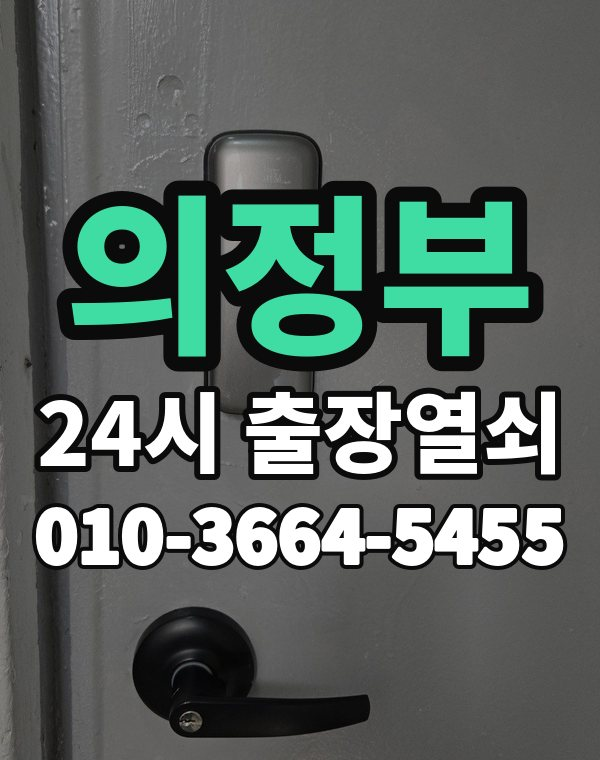

의정부는 이런 곳입니다
의정부는 민락, 신곡동 아파트와 의정부동 상가, 가능동 주택가가 모여 있는 도시입니다.
오래된 주택가는 손잡이 일체형 도어락이 많습니다.

의정부시 출장 가는 동네
- 의정부동
- 호원동
- 장암동
- 신곡동
- 용현동
- 민락동
- 녹양동
- 가능동
- 송산동
의정부동 출장열쇠, 호원동 열쇠집처럼 동네 이름으로 찾으셨어도 같은 곳입니다.
적혀 있지 않은 동네도 의정부시 안이면 다 갑니다.
의정부에서 맡기실 수 있는 일
의정부 출장 부르실 때
의정부역 주변 상가와 오피스텔은 건물 출입 여부를 알려주세요.
늦은 밤에도 바로 출동합니다.
의정부역, 회룡역, 가능역, 민락 근처라고 말씀해 주셔도 위치 잡기가 쉬워집니다.
가까운 역이나 큰 건물, 단지 이름을 같이 알려주세요.
- 도로명 주소나 건물 이름
- 도어락 사진 한 장 (문자로)
- 신분증, 우편물 등 사시는 걸 확인할 것
전화부터 작업까지 순서는 이용안내에 적어 두었습니다.
의정부 출장열쇠 관련 글
- 의정부 가능동 주택가 보조키 잠금이 안 열릴 때와 보조 잠금 점검 방법
- 의정부 가능동 주택가 비파손 개방이란 무엇이고 어떤 문에서 가능할까
- 의정부 호원동 도어락 번호판이 꺼졌을 때 배터리 비상 전원부터 출장열쇠까지
- 의정부 호원동 현관문이 안 열릴 때 증상별로 원인 짚어 보기
- 의정부 장암동 열쇠가 열쇠구멍 안에서 부러졌을 때 하지 말아야 할 일과 개문 순서
- 의정부 장암동 동네 상가와 작업실 출입문이 고장 났을 때 영업 지키는 대응
- 의정부 민락동 도어락 경고음과 오작동이 반복될 때 원인 확인과 출장열쇠 점검
- 의정부 민락동 아파트 스마트 도어락, 지문·카드·얼굴인식 중 우리 집 생활에 맞는 쪽 고르기
- 의정부 녹양동 한파 아침 도어락이 늦게 반응하거나 꺼질 때 건전지와 번호판부터 살펴보세요
- 의정부 녹양동 겨울 습기와 결로로 현관문 도어락이 말썽일 때 점검과 관리법
- 의정부 신곡동 아파트 현관 방범 점검, 과하지 않게 챙겨 볼 부분
- 의정부 신곡동 아파트 스마트 도어락 고르는 법 출장열쇠가 알려주는 선택 기준
- 의정부 송산동 베란다 창 잠금·미닫이 중문·방문 잠금장치가 말썽일 때 종류별 원인과 해결
- 의정부 송산동 도어락 비밀번호를 잊어버렸을 때 기억 단서 찾기와 안전한 개문 순서
- 의정부 의정부동 택배 받으러 나왔다 문이 잠겼을 때 바로 할 일
- 의정부 의정부동 상가·사무실 출입문 도어락이 안 열릴 때 출장열쇠 이용 순서
- 의정부 용현동 이사 후 도어락 비밀번호 초기화와 열쇠 교체 체크리스트
- 의정부 용현동 자취방·고시원·쉐어하우스 출입문이 잠겼을 때 문마다 다르게 대처하기
의정부 출장열쇠 자주 묻는 질문
의정부 어느 동네까지 오시나요?
의정부동, 호원동, 장암동, 신곡동, 용현동, 민락동 등 의정부시 전 지역 갑니다. 의정부시 안이라면 동네 상관없이 갑니다.
새벽에 의정부에서 전화해도 되나요?
밤이든 새벽이든 받습니다. 어디인지 들으면 언제쯤 도착하는지 바로 말씀드립니다.
개방에 실패해도 비용이 나오나요?
못 열면 비용은 받지 않습니다. 비용은 작업 전에 먼저 말씀드리고, 괜찮다고 하시면 시작합니다.
집주인이 아니어도 열어 주나요?
사시는 분이 맞는지만 확인되면 됩니다. 신분증이나 우편물을 준비해 주세요.
의정부에서 도어락 고장도 봐주시나요?
네, 문 열기와 함께 도어락 수리, 설치, 교체도 합니다. 고쳐서 되면 교체는 권하지 않습니다.